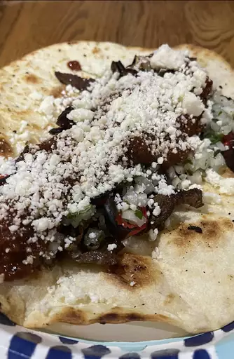

Tacos

Description
Nice, spicy tacos, perfect for dinner. Sure to satisfy hunger
Ingredients
- 1 ½ pounds skinless, boneless chicken breast meat - cubed
- 2 green onions, chopped
- ⅛ cup red wine vinegar
- ½ lime, juiced
- 2 cloves garlic, minced
- 1 teaspoon dried oregano
- 1 teaspoon white sugar
- ½ teaspoon salt
- ½ teaspoon ground black pepper
- 10 (6 inch) flour tortillas
- 1 tomato, diced
- ¼ cup shredded lettuce
- ¼ cup shredded Monterey Jack cheese
- ¼ cup salsa
Instructions
- Sauté chicken in a medium saucepan over medium high heat until tender, about 15 to 20 minutes. Add green onions, vinegar, lime juice, garlic, oregano, sugar, salt, and pepper. Simmer over low heat for 10 minutes.
- Sauté chicken in a medium saucepan over medium high heat until tender, about 15 to 20 minutes. Add green onions, vinegar, lime juice, garlic, oregano, sugar, salt, and pepper. Simmer over low heat for 10 minutes.
Back to homepage